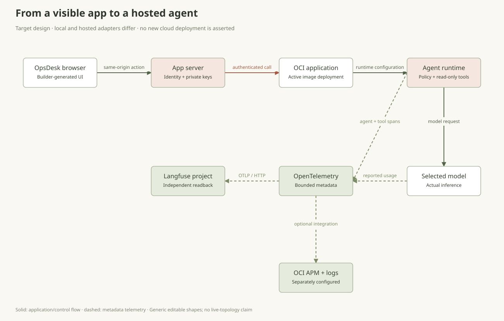

v0: start with the visible preview, then add a private server route for the agent.
Pick one tool. Start building.
Start with the OCI Enterprise AI route, or choose a visual builder or Codex for the same OpsDesk app.
Get help shaping the idea
Use an assistant to refine your app definition, explain code or plan a test. Then bring the result back to your chosen builder.
These links open the assistant websites. They do not connect a model to OpsDesk or provide runtime API credits.
Oracle AI Agent Studio & LiveLabs
Oracle AI Agent Studio for Fusion Applications ↗
For the related OCI-hosted visual walkthrough, open the hands-on Private Agent Factory lab.
Open Oracle LiveLabs · Private Agent Factory ↗Agent Studio for Fusion Applications and Private Agent Factory are separate offerings. This optional reference does not replace the OpsDesk coding exercise.
Build locally. Inspect the backend. Prepare OCI.
Open Codex in a fresh learner folder, paste the local build prompt and inspect the result. The OCI prompt prepares a reviewable hosting packet; it does not grant deployment authority.
mkdir -p local/private/opsdesk-codex codex -C "$PWD/local/private/opsdesk-codex"
Codex: create the local app
Create a visible OpsDesk application in this fresh learner workspace. Start with the UI so I can use it live: three synthetic incidents, search, priority filter, selected-ticket detail, New ticket, and an AI panel that initially says Not connected. Use the existing local toolchain; do not install globally or activate paid services. Keep a small app definition, capability list and run instructions beside the code. Use Oracle Redwood styling: Oracle red, warm stone surfaces, Georgia headings and local Figtree/system UI text. Use only the operator-approved brand assets. Do not read private folders, credentials, cloud configuration or personal browser data. Then propose the server-side connection to the workshop agent. Reuse its reviewed bounded tools, private model config, session ownership and OTel Observer. Browser code must never receive a provider key, Langfuse secret or OCI signing credential. Use a same-origin server action. Do not bypass Origin checks or add wildcard CORS. Do not copy a canned answer into the live AI path. The coding model and app model are separate; no runtime provider call while building. Explain the runtime harness by pointing at its actual code: context/messages, tool registry and validation, authorization, step/token limits, state, and spans. Test the visible controls and failure states. A change request must stop before model construction. Keep ticket text out of exported telemetry. Report precisely what is locally verified versus still requiring model/backend/cloud acceptance. Stop after the local app and tests; do not stage, commit, push or deploy.
Codex: prepare the OCI deployment packet
Prepare OpsDesk's agent for OCI Generative AI Applications + Deployments. Use the repository's existing enterprise hosting sources as references. Do not assume the local Studio native-SSE API and the hosted LangGraph JSON API are interchangeable. Document the app-server adapter, authenticated invocation and normalized response. Read the applicable OCI skills and project rules. Resolve the approved account, region, compartment, application, deployment, image repository and identity before any cloud operation. Do read-only inspection only where it is already authorized. Do not scan unrelated profiles, credentials, shared resources or other owners. Produce a concrete reviewed deployment packet: configuration/secret references, container platform and source hash, proposed image digest, scan/admission checks, application networking/authentication, narrow IAM requirements, rollout/rollback steps, cost/retention and the exact invocation/readback acceptance commands. Use resource/workload identity and Vault where supported. No browser credentials. On an ARM Mac, do not build amd64 using emulation; identify an approved native builder. Preserve the agent's bounded tools and session/trace lineage. Configure its OTel metadata export to the operator's own Langfuse; optional APM/Log Analytics are separately configured and verified. Preserve failures; an ACTIVE deployment, HTTP200 or exporter flush does not establish model or telemetry acceptance. Do not build/push, create IAM/resources, activate a deployment or invoke a paid model under this preparation task. Present the exact proposed resource changes and a reviewable artifact; deployment requires the operator's current scoped authority.
Open your toolkit · official links
Choose one builder and one model backend. The other tools are optional stages; use your own accounts, project and credentials.
No model or credentialsExplore OpsDesk →
Your app and backend
Independent readback
Define a small useful app
An incident inbox with one AI action. Start with the visible product.
A helpful investigator with a toolbox
You ask, “Why is payments slow?” A chatbot can write an answer. An agent can also ask a permitted tool for evidence, read the result and decide what to do next. It repeats a small loop until it can answer or a rule tells it to stop.
The model suggests; the harness runs the job
The model is the part that proposes words or a tool call. The harness is the surrounding program: it gives context, checks permissions, runs an allowed tool, remembers the conversation and records the result. A model cannot add a new permission just by asking for it.
What we will build live
OpsDesk gives an operator a ticket inbox and one useful AI action. First the inbox works by itself. Later, Analyze safely asks the runtime investigator to collect synthetic service/release evidence. A convincing answer is not proof: we will look for the actual tool call and its trace.
What should I build first?
One operator, one ticket inbox and one read-only investigation. You do not need a database or cloud account to explore the product sketch.
Try asking: “Which information would let an operator decide their next safe check?” Write that down before choosing a model.
Remember: The coding assistant creates the source; the runtime agent is the program the finished app calls.
Setup, glossary and more help →Follow the helper, one step at a time
The diagram teaches the loop. It does not run a model or send a trace.
Read at your own pace: Meet your AI teammate · Inside the agent engine
- Choose one build path: Base44, v0, Lovable or Codex.
- Use invented tickets. Keep persistence, real accounts and production connectors out of the first preview.
- In the next step, copy the app definition. The AI panel must initially say it is disconnected.
Build and click the app
Get something useful on screen before discussing agent code.
Choose the workshop path that fits your tool
Base44, v0 and Lovable generate a preview from a description. Codex edits files in your chosen workspace. Pick one path for the hour; the app definition and acceptance checks are the same. The Codex tab includes local build instructions and an OCI preparation prompt.
Review capabilities before adding more features
Create a synthetic ticket, search for it, filter by priority and select its detail. These are real UI interactions. Until a backend exists, the AI panel says it is disconnected. Persistence, production login and real operational connectors are additional capabilities, not things a polished preview proves.
The coding assistant is not the runtime agent
The builder or Codex uses its own coding model to produce source. The finished app later calls a separately configured model through a controlled server. An account in a builder does not automatically provide a model key, OCI identity or Langfuse project to your deployed app.
Toggle between the compact List View and the Kanban Board View across Open, In Progress, and Resolved statuses. Drag cards or update status controls directly in browser storage.
Tickets
Choose a ticket. No AI answer has been generated.
Create a synthetic ticket
My preview looks good. Am I done?
Create a new synthetic ticket, search for its title, filter it out, clear the filter and select it again. A screenshot alone cannot prove these controls work.
If a control is decorative, ask the builder to implement only that interaction and retest it. Keep the AI panel disconnected until the controls work.
Remember: A hosted builder preview cannot reach a server bound to your laptop’s 127.0.0.1 address.
Setup, glossary and more help →Prompt to copy
Build OpsDesk, a small incident board for an operations team. Start with the visible app only. I should be able to click and use it before adding AI. Create three synthetic tickets: payments is slow (high), checkout needs a health check (medium), catalog availability check (low). Each has id, title, description, service and priority. Show an inbox, priority filter, search, selected-ticket detail and a New ticket form. Ticket edits stay in memory for this first exercise. Add an Ask AI panel with Analyze safely, a result area and an initial state reading "AI is not connected yet". Do not generate a fake AI response, pretend to authenticate a user, or imply that a database exists. Mark all tickets as synthetic training data. Use Oracle Redwood for a clear desktop/mobile layout: Oracle red accents, warm stone surfaces, Georgia headings and local Figtree/system UI text. Use only approved brand assets. Keep compact incident rows and one clear action. Make loading, empty, validation and failure states usable. Render ticket text as text, never raw HTML. No paid integrations, real customer data, production connectors, automatic publishing, real model calls or secrets in this first build. Show which visible features work and which capabilities still need a backend. Then stop for a review of the preview.
- Paste the app definition in your chosen tool and inspect the preview or local app.
- Create a synthetic ticket, search for it, change the priority filter and open its detail.
- Ask the builder to fix an actual UI problem. Keep the agent disconnected until these controls work.
Connect the investigator
One button calls a real agent through a server-owned integration.
Explore how the app, harness, model and optional RAG connect
The model proposes. Your runtime decides.
An agent is the working loop: a model, a harness and approved capabilities. Choose a story, then select any component to see its job and its boundary.
Solid arrows: request, context or result. Dashed arrows: optional retrieval or telemetry. Color follows the selected step; it does not indicate measured traffic.
The guardrails below control execution. Langfuse shows what actually ran.
Open the Langfuse setup and trace lab → · Tools to repeat this at home →The model proposes. Your code decides.
A guardrail is a check around an agent action. A system prompt guides the model; a deterministic control decides whether the action can run. Use both, and test the boundary.
Check the request and scope
Validate request shape and size. Resolve the server-owned session and ticket. Reject an explicit change intent before constructing a model.
Enforced in the local referencestudio.py: make_server, Studio.run
desk_backend.py: create_ticket, actionOpaque local sessions are not production login or enterprise tenant isolation.
Limit what the agent can do
Allow only registered tools. Validate names, types, enums and extra/duplicate arguments before a handler runs. Bound steps, context, output and reported usage.
Enforced in the local referencestudio.py: SCHEMAS, _unique_fields, _validate
studio_model.py: streaming boundsNo shell, credential reader or infrastructure write handler is available. Token bounds are not a guaranteed invoice cap.
Separate evidence from authority
A ticket or runbook can contain “ignore the rules.” It remains untrusted data. Model instructions say to ignore that request; the code-owned tool registry limits executable capabilities.
Instruction guidance + enforced tool boundarystudio.py: SYSTEM, tool dispatchThis is not a prompt-injection detector or a guarantee that every generated answer is safe.
Handle the result safely
Render answers as text, keep failures visible and keep provider keys on the server. The Studio telemetry configuration rejects content capture; verify delivery and readback separately.
Safe rendering and metadata defaults existweb/desk.js: textContent
studio.py: Settings.load
observability.py: ObserverSemantic answer validation, content moderation and PII/DLP filtering are not implemented. A final-output filter must also account for streaming text already shown.
Try a guardrail scenario
These are teaching illustrations, not live security tests. Choose a case and inspect where the execution path should stop.
What does a guardrail NOT replace?
Authentication, least-privilege service identity, secrets management, network policy and runtime isolation still need their own controls. A refusal message, moderation score or trace is not permission enforcement. The current approval_required response is terminal; there is no approval-resume API.
Before production, design authenticated user/tenant ownership, rate limits and spend monitoring, sensitive-data handling, supply-chain checks, secure deployment and human review of privileged actions. None of these is automatically supplied by a chat model.
A two-minute proof to show live
- Use the local change-request control. Inspect its actual approval_required outcome and zero model steps.
- Run the isolated API and tool-contract tests in the terminal. They use explicit model doubles; they do not attack a provider.
- Show which code rejects the action, and distinguish that result from the agent’s final wording.
PYTHONPATH=src .venv/bin/python -m unittest discover -s tests -p 'test_desk_backend.py' -v PYTHONPATH=src .venv/bin/python -m unittest discover -s tests -p 'test_studio.py' -v
Guardrail implementation map and test plan → · Extend the controls in Part 5 → · OWASP prompt-injection guidance ↗
One button crosses a backend boundary
The browser submits a bounded ticket action to its own server. The server authenticates the user, checks the ticket and selects an allowed agent/model configuration. Provider keys and OCI request signing stay on that server. A SaaS preview cannot call a private laptop loopback address. The local reference is a loopback workshop server, not a production login or tenant boundary.
How the agent is assembled from the harness
Start with the job and the messages it needs. Register narrow tool schemas and reviewed handlers. Add the loop that accepts a model proposal, validates its arguments, executes the handler and appends the observation for the next model call. Add authorization, budgets and metadata spans around those steps.
A framework is useful scaffolding, not an automatic guarantee
The local Studio shows native tool calls; the existing hosted sample uses a LangGraph coordinator and JSON protocol. A framework can organize the flow, but your code still defines ownership, stopping conditions, safe tools and evidence. Matching HTTP paths or changing a URL does not make two different APIs compatible.
Why does Analyze safely fail?
Check whether the request reaches your own server, then inspect its sanitized error. Confirm the exact configured model alias, authentication binding and native tool support.
Start with one ordinary greeting, then one health question. Change one setting at a time; never substitute a canned answer for a failed model call.
Remember: The server chooses the model and looks up the session-owned ticket. Never accept an endpoint or a key from the browser.
Setup, glossary and more help →What does the harness actually contain?
Choose a component to connect the idea with its real source boundary.
Browser action → own server → authenticate and validate → bounded agent loop → permitted tool → observation → answer
Prompt to copy
Connect OpsDesk's AI panel to a server-owned agent, keeping the visible app unchanged. Use the workshop API contract and the exact operator-approved endpoint supplied outside this prompt. Do not invent a URL, model, key or successful response. The agent must inspect the selected synthetic incident, use read-only service_health and release_diff if registered, separate observations from hypotheses and recommend one safe next check. It cannot run shell, read credentials, deploy or roll back. Use the explicitly selected model; no automatic provider or scripted fallback. Keep credentials in your platform's server-side secret store. Browser code calls our same-origin server function, not the provider or OCI IAM endpoint directly. Derive session/user scope on the server; never trust a browser-supplied tenant or permission claim. Validate ticket IDs/fields and cap body size, steps and output. Add a Test a change request control. Enforce its change intent in code before model construction; return approval_required without any model invocation or real change. Implement busy, failure and unavailable-backend states. No automatic retry of AI. Keep real failures visible and verify that creating/filtering tickets still works. Do not expose a local server through a public tunnel or enable wildcard CORS.
- Provide the exact approved backend through the server integration; no browser keys.
- Use Analyze safely. Inspect actual health/release evidence and a cautious next step.
- Explain the harness in one sentence: it decides which tools the model may call and when to stop.
Verify the complete user journey
The result must work as an app, not just a terminal experiment.
The app must complete the whole journey
Create a synthetic ticket, search for it, open its detail and run a real investigation. The answer must come from your configured model and permitted tool. A static preview is only a sketch.
The first-hour finish line
Your app has a usable inbox, a connected AI action and clear loading/failure states. Keep its limited in-memory lifetime explicit. Durable persistence and production authentication are separate capabilities.
Tracing is the next addition
Keep the local runtime receipt, but do not spend this build hour provisioning telemetry systems. Part 4 adds the full trace/export/readback workflow to this same app.
How do I know the answer belongs to this ticket?
Create a fresh synthetic ticket, select it and run analysis. Inspect the submitted ticket ID, actual server lookup and tool evidence. Clear stale results when selecting a different ticket.
Repeat the journey once in the actual app. An answer shown only in a terminal or a static preview does not pass the app check.
Remember: The app must work by the end of Part 1. Full export/readback is added in Part 4.
Setup, glossary and more help →Preview Part 4: tracing the app
Read a trace before opening a real one
Bars use invented durations. Actual OpsDesk evidence is recorded separately; unknown usage and costs remain unknown.agent.run · one action / one trace security.authorize · evaluate intent llm.complete · actual generation + reported usage tool.service_health · permitted read-only handler llm.complete · answer from its observation OTLP HTTP → own Langfuse /api/public/otel/v1/traces Project keys remain in the runtime; ticket text stays out of exports.
- Create a fresh synthetic ticket, find it, select it and run analysis.
- Check that the answer belongs to that selected ticket and repeated clicks do not create concurrent runs.
Test loading and failure states
A usable app explains when its backend cannot answer.
Make errors understandable
Use an isolated test to show a failed request. The UI must clear its loading state and show an honest error without inventing an answer or automatically retrying inference.
Keep the initial boundary small
The initial investigator is read-only and has no shell or infrastructure mutation tool. Keys stay on the server. Part 5 expands the tests and controls without rebuilding the app.
The app stays busy after an error. What should I check?
Inspect the request lifecycle and cleanup path. Both successful and failed responses must clear the busy state and display the actual outcome.
Use an isolated model double or controlled failed request, not a service shutdown. Ensure a later permitted request can run.
Remember: A canned answer is not recovery. Keep real failures visible; add broader security regression tests in Part 5.
Setup, glossary and more help →- Use an isolated test or model double to simulate a failed request without changing shared provider settings.
- Verify loading clears, failure stays visible and a later valid action can run.
Save the working baseline
Every later part extends this same app.
Save the app you can run
Record the source baseline, exact launch commands, model alias requirements and synthetic acceptance journey. Restart it before handing it over.
Extend this app in every next part
Part 2 adds your engine; Part 3 adds model choice and cost; Part 4 adds observability; Part 5 adds security regressions; Part 6 prepares hosting. Keep the working inbox and AI action throughout.
Do I need OCI to complete the first hour?
No. You can finish the local app and explain its target architecture. A live hosted invocation needs your own scoped tenancy, identity, image and network path.
Save the source baseline, exact start/stop command and private config requirements. Restart the app locally before proceeding to Part 2. OCI hosting is added in Part 6.
Remember: The local Studio and hosted coordinator have different request protocols. An adapter and authentication are required; replacing a URL is not a migration.
Setup, glossary and more help →Preview Part 6: the OCI hosting architecture

- Write exact start/stop steps, private config requirements and the working app URL.
- Save a local baseline copy or approved revision; do not publish credentials.
- List the next addition: your own bounded engine in Part 2.
0 of 6 results checked (0%) · checks are self-reported, reset on reload
Illustrations teach the system; live OpsDesk receipts prove execution. SaaS generation, real model behavior, telemetry readback and OCI deployment are separate checks. This guide does not invoke a model, spend credits or create resources.